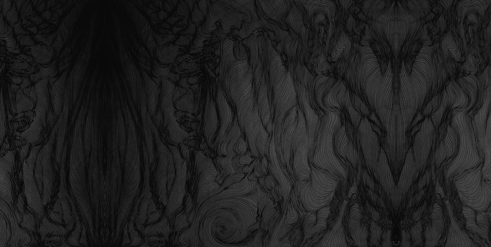
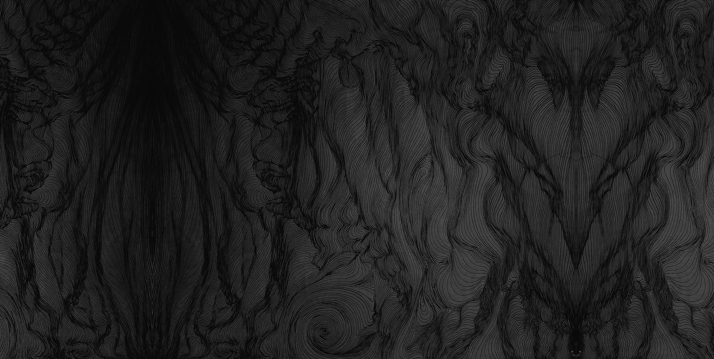
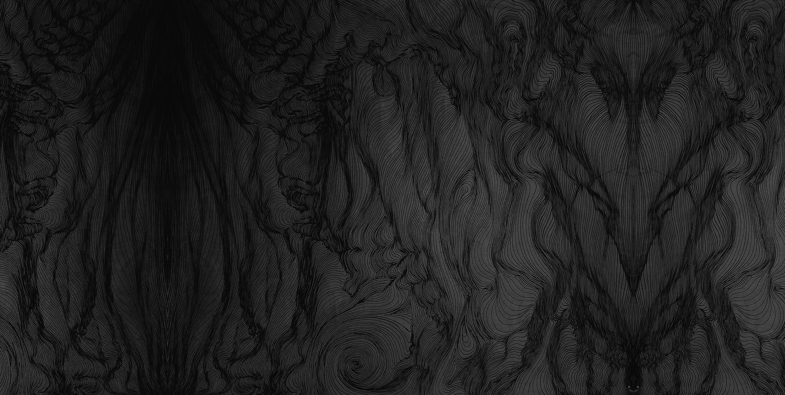
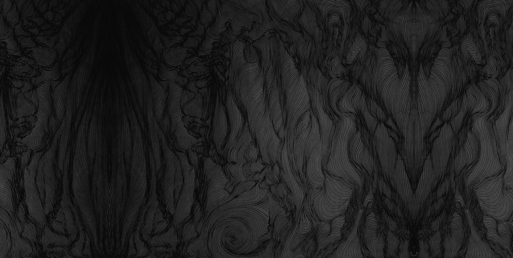

Sarah is a visual artist based in BC, Canada. Her work spans a variety of mediums — from painting, to drawing, to digital media installations. Themes that inspire her are cosmology and sacred geometry. Aesthetically, she is drawn to symmetry, luminescence, ethereal colours, and the night sky. Aesthetic and emotion are elements that guide her to create solely from her visual intuition and "feelings". Through this, she oftentimes finds that her creations reflect depths of the subconscious. Her paintings, especially, represent the soul; the universe.